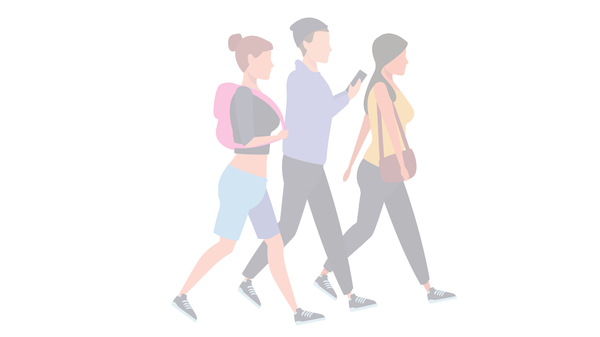
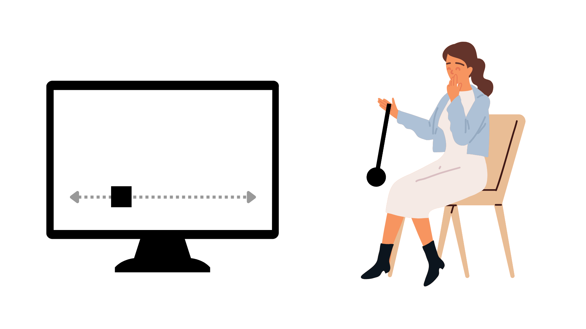
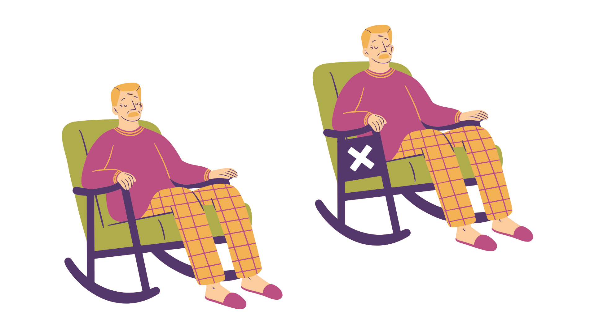
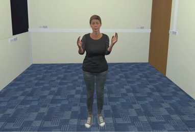

Does gaze perception influence the emergence of interpersonal coordination?
Cathy Macpherson, Amber Brown, Michael Richardson, & Lynden Miles

Introduction
What Is Interpersonal Coordination?
Interpersonal coordination is the alignment of behaviour between people during interaction, expressed through movement, speech, and physiology.
Core Social Process
It is a fundamental feature of social exchange.
Rapport and Affiliation
When people coordinate, they often like each other more and feel a stronger connection.
Shaped by Context
Group membership and argument influence the degree of coordination.
Individual Differences
Mental health symptoms and neurodiversity can also shape how coordination unfolds.
Introduction
Theoretical Mechanisms
The HKB Model (Haken, Kelso, & Bunz, 1985)
φ̇ = Δω − a sin(φ) − 2b sin(2φ)
φ̇ = Δω − a sin(φ) − 2b sin(2φ)

Schmidt et al. (2007)

Richardson et al. (2007)
Coupling influences coordination
Visual tracking strengthens coordination in minimally social contexts (Richardson et al., 2007; Schmidt et al., 2007).
What about in social settings?
Individuals show subtle differences in gaze and attention as a function of context.
Research Question 1
Do patterns of social attention (via gaze and focus) govern coordination?
Introduction
The Dual Function of Gaze
Gathering information: coupling or decoupling from an interaction partner.
A social signal: communicating behaviours such as affiliative intent.
Research Question 2: Does partner gaze influence the emergence of coordination?
Studies
Study 1 & 2: Methods
Procedure
Participants: Undergraduate students.
Task: Performed a coordination task with 'another participant' - actually a pre-programmed avatar.
Manipulations: The avatar displayed either direct or averted gaze (study 1 & 2) and participant focused on self or other (study 2).
Conditions
Direct

Averted
Measurements
Motion capture: From the controllers (Study 1 & 2) and headset (Study 2).
Gaze tracking: Eye tracking via HTC Vive headset.
Coordination: Relative phase (arms) and cross-recurrence (head) calculated.
Studies
Study 1 & 2: Results
Partner Gaze
Arm coordination: higher in direct than averted (study 1 & 2).
Head coordination: higher in averted when in the other-focused condition (study 2).
Participant Gaze
Arm coordination: higher with more time looking at the avatar (study 1).
Head coordination: higher with more time looking at the avatar in the other-focused condition (study 2).
Pose Estimation
Works from ordinary video or webcam footage.
Extracts keypoints across the whole body.
Preserves natural interaction contexts.
New Analysis Pipeline
Pose Estimation Challenges
Challenge: Hundreds of samples, biased by camera angle/position.
Best practice guidelines: Didn't really exist.
Analysis framework: Step-by-step from acquisition and feature selection through to linear and recurrence analysis.
Related preprint
Sale, C., Macpherson, M. C., Patil, G., Miles, K., Kallen, R., Wallot, S., & Richardson, M. J. (2026). Nonlinear methods for analyzing pose in behavioral research.